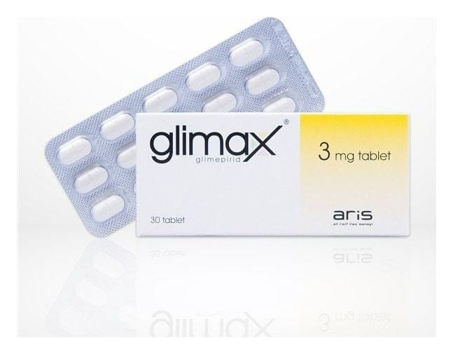

Glimax 3 mg Tablet, 30 Adet

Ne için kullanılır
KT · Bölüm 1GLİMAX®ağızdan alınan aktif kan şekeri düşürücü bir ilaçtır. Sülfonilüre adı verilen kan şekerini düşürücü ilaç grubuna ait bir ilaçtır. GLİMAX®pankreasınızdan salgılanan insülin miktarını arttırarak etki eder. Daha sonra insülin kan şekerini düşürür. GLİMAX®’ın içinde glimepirid etkin maddesi bulunur. 1 tablet içinde 3 mg etkin madde vardır. GLİMAX®’ın ayrıca 1 mg, 2 mg ve 4 mg glimepirid etkin maddesi içeren diğer dozajları da mevcuttur. Bütün dozaj formları 30 veya 60 adet tablet içeren, blister ambalajlarda kullanıma sunulmuştur.
GLİMAX®, diyet, egzersiz ve kilo verilmesi yoluyla kan şekeri düzeyinin kontrol altına alınamadığı, insüline bağımlı olmayan şeker hastalığının tipinin (Tip 2 diyabet) tedavisinde kullanılır.